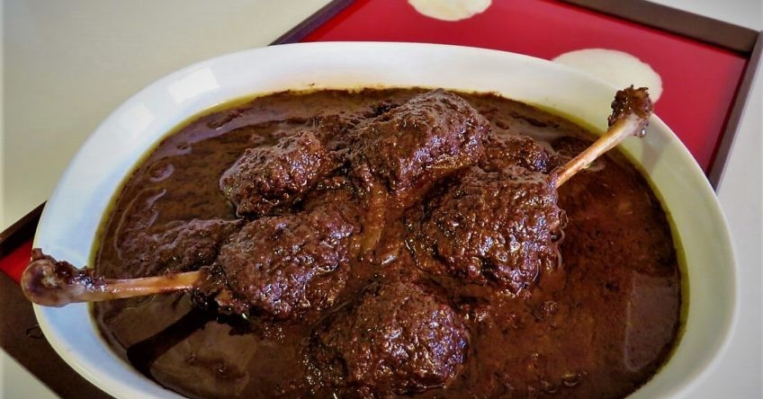

فسنجون

تاریخچه
.فسنجان اردک یکی از انواع خورش های سنتی و خوشمزه شمال کشور است که با دستورهای متنوعی تهیه می شود
مواد لازم
- اردک
- پیاز
- گردو
- رب انار
- کره
- زعفران دم کرده
- شکر
- نمک و فلفل سیاه
طرز تهیه
- برای تهیه خورش فسنجان با اردک ابتدا اردک را به خوبی می شوییم و کنار می گذاریم تا آب اضافی اش خارج شود. در ادامه مغر گردو را درون میکسر یا غذاساز می ریزیم و به طور کامل میکس می کنیم تا حالت خمیری پیدا کند.
- در این مرحله پیاز را رنده می کنیم و به همراه کمی روغن داخل یک قابلمه مناسب می ریزیم. در ادامه قابلمه را روی حرارت قرار داده و پیاز را به خوبی تفت می دهیم تا سبک شود، سپس مقداری زردچوبه به آن اضافه کرده و مجددا تفت می دهیم.
- پس از اینکه خامی زردچوبه گرفته شد، گردوی میکس شده را به قابلمه افزوده و به آرامی تفت می دهیم. پس از ۲ دقیقه ۶ لیوان آب سرد به قابلمه اضافه کرده و اجازه می دهیم گردو شروع به روغن انداختن کند.
- در همین حین زعفران دم کرده را با مقداری نمک، فلفل سیاه و زردچوبه ترکیب کرده و روی گوشت اردک می مالیم. در ادامه یک تابه مناسب روی حرارت قرار داده و مقداری کره اضافه می کنیم، سپس اجازه می دهیم کره ذوب شود.
- در این مرحله اردک را به تابه اضافه کرده و تمام قسمت هایش را به صورت یکدست سرخ می کنیم، سپس از تابه خارج کرده و به قابلمه اضافه می کنیم. حالا حرارت زیر قابلمه را کم می کنیم تا اردک به مدت دو تا چهار ساعت بپزد.
- پس از گذشت این زمان رب انار و شکر را اضافه کرده و اجازه می دهیم خورش جا بیفتد. در نهایت پس از اینکه اردک کاملا مغز پخت شد، خورش را در درون ظرف مورد نظرمان می کشیم و به همراه برنج سرو می کنیم.